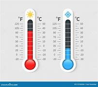

Temperature is a physical quantity that describes how hot or cold an object or the weather is. We have mainly three units of measurement of temperature, Celsius, Kelvin, and Fahrenheit. Kelvin is the SI unit of measuring temperature.
0°C = 273.15 K = 32°F
0 K = -273. 15°C = -459.57 °F
0°F = -17.778°C = 255.372 K
To know more about this,please click on below click
PDF downloadTo see more images
ImagesTo practice problems on this topic click on below click
Practice problems